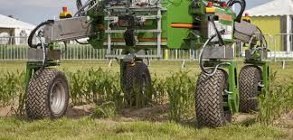

AgriBot – Autonomous Tractor
 Tractors are essential agricultural equipment that is used right from preparing the soil for planting seeds all the way to harvesting crops. It can be used for hauling heavy materials or even as personal transportation. Farmers spend a lot of their time driving tractors to get work done. Automation in driving technologies has reached agriculture as well with autonomous tractors freeing up time for farmers to focus on other aspects of agriculture. Polish startup Agribot develops its eponymous autonomous tractor, the Agribot, offering several benefits for the farmer. Apart from saving time, their tractors are fitted with a range of sensors to significantly reduce human contact with chemicals and pesticides during weeding. It allows for increased capacity, working day and night along with the ability to carry out two agronomic tasks simultaneously.
One Water – Smart Irrigation
The changing seasons have a great impact on agricultural activities. Prolonged drought conditions during the summer months and devastating floods during the rainy season affect crop yields all over the world. Some regions in the world are facing years-long drought conditions with minimal rainfall. It is no surprise then that innovations in irrigation are receiving a lot of attention. Smart irrigation provides optimal water delivery to crops while ensuring there is minimal to no wastage in water used for agriculture. Indian startup One Water, guided by their parent company Nascent Info Technologies, develops Internet of Things (IoT) based smart irrigation systems for agriculture. Excess water can also cause the destruction of crops and spur the growth of weeds. One Water can sense soil moisture, humidity, and temperature to automatically execute drip irrigation on the farm, saving valuable resources.
Saga Robotics – Autonomous Harvesting
For farms with low mechanization, crop harvesting is the most labor-intensive activity of the season. Harvesting is not limited to just fields but includes orchards, vineyards, and plantations too. Automation in harvest technologies for agriculture ensures lower stress on labor and higher efficiency in gathering crops. It also protects the labor from potential accidents or snake-bites. Norwegian startup Saga Robotics develops a modular robotic platform called Thorvald, an autonomous farm robot capable of performing several tasks, including harvesting of fruits and vegetables. Farmers can choose from 4 different types of robots based on their specific needs. All their robots use the ROS software, an open-source meta-operating system for robots.
Desamis – Livestock Monitoring
Cattle, sheep, pigs, goats, and chicken contribute significantly to food and clothing for humans. Animal husbandry is an important branch of agriculture that deals with the day-to-day caring, breeding, raising, and monitoring of livestock. Cattle, especially, are being provided with their own sensors that track their movement and activity, monitor heat in their stomach, check their breath to detect diseases, and more. Japanese startup Desamis develops U-monitor, an Artificial Intelligence (AI)-based smart dairy platform to monitor, detect, and analyze cattle behavior so that the farmer can make informed decisions. It records and monitors when cattle are feeding, drinking, moving, standing, lying and ruminating. It looks for dysstasia-related diseases using sensors in the stomach of cattle. Moreover, it provides the data in real-time, allowing for immediate analysis and decision-making.
Plastomics – Genetic Editing
It is believed that by 2050, there will be around 9 billion humans in the world. Today, almost all arable land in the world is being used for agriculture. This drives innovation in agriculture to significantly increase farm output or yields per acre/hectare. And one of the most powerful, but controversial, innovations is the genetic manipulation of crop seeds. Techniques like C4 photosynthesis, CRISPR/Cas9 or genomic selection are powerful because of their ability to make crops highly resistant in tough growing conditions. They are controversial because there is little control over the result of editing a gene of a crop, not to mention the high costs involved for such processes to eventually feed billions. The US-based startup Plastomics is developing a new way to improve crops by making modifications to the plant’s genetic traits using its chloroplast rather than its nucleus.